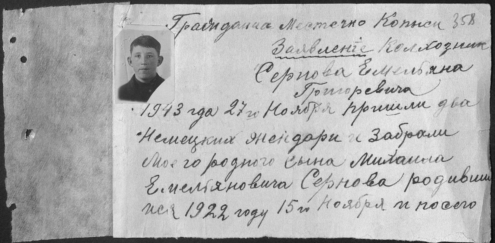
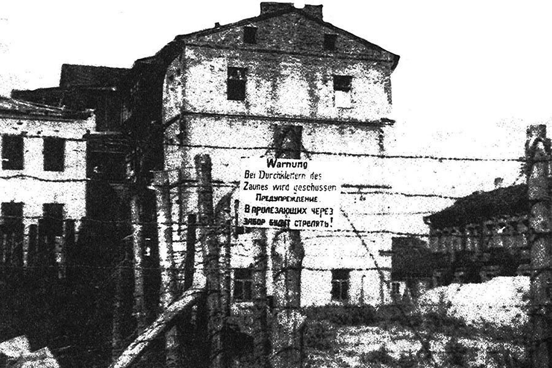
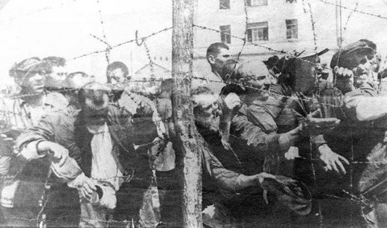

«В августе месяце 1943 года немецким гестапо за связь с партизанами был арестован мой муж, Ларионов Георгий Александрович… В сентябре 1943 года он был расстрелян. 29 августа за хранение оружия был арестован и брошен в тюрьму мой сын Ларионов Анатолий, рожденный в 1927 году». Через месяц его освободили, а в ноябре вновь схватили и угнали в Германию. «Дальнейшая судьба его мне неизвестна», — пишет в феврале 1945 года белоруска, потерявшая и мужа, и сына. К справке прикреплена маленькая фотокарточка ее пропавшего 17-летнего мальчика…


Slide
Озаричи. До и после
Сперва — архивное изображение места до установки памятника , дальше — современный вид мемориала в Озаричах.


Slide
Тростенец. До и после
Мемориальный комплекс в Тростенце — одно из крупнейших мест массового уничтожения на территории Беларуси.


Slide
Хатынь. До и после
Мемориальный комплекс "Хатынь" построен на месте деревни, уничтоженной вместе с жителями в годы войны.
🖱️ Наведи курсор на любое изображение, чтобы увидеть, как оно изменилось


Нацисты обнесли гетто двухметровыми столбами и натянули колючую проволоку в несколько рядов. Висит предупреждение: по перелезающим через забор будут стрелять

Узники концлагеря. Фото: Федеральный архив Германии